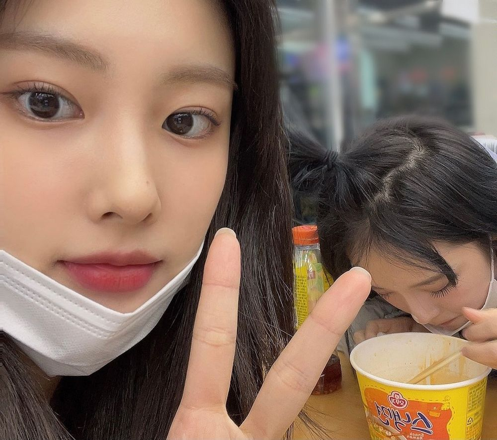
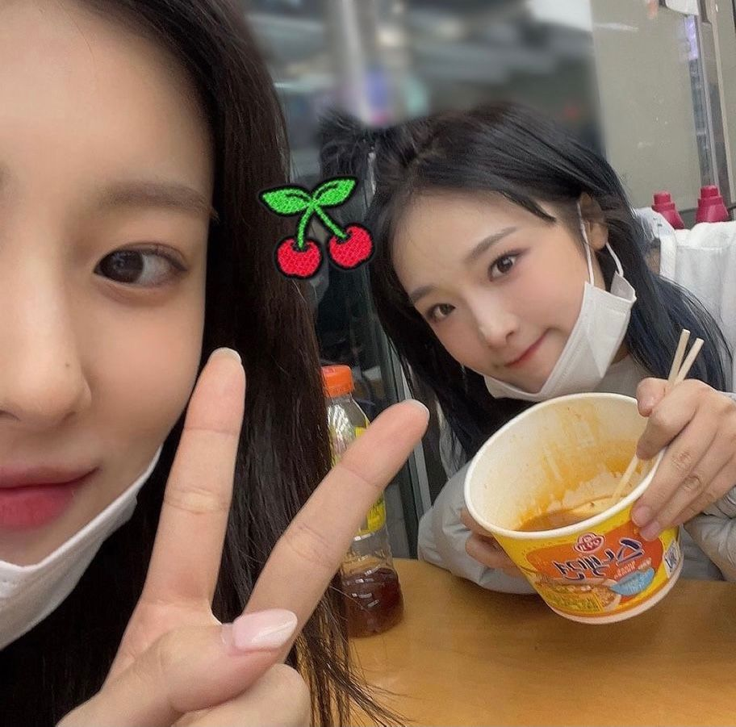

이호 뭐행 난 어제 연습하고 배고파서 편의점 가서 스낵면이랑 불닭볶음면 먹었어 ㅎㅎㅎ
이건 예나랑 내가 좋아하는건데 불닭볶음면 90프로정도 먹고 나면 참치마요 삼각김밥 넣고 치즈넣고 전자렌지 돌리면 짱 맛있어...👍🏻
(불닭볶음면 먹을때 물 다 버리지말고 좀 남겨둬야함)

이건 예나랑 내가 좋아하는건데 불닭볶음면 90프로정도 먹고 나면 참치마요 삼각김밥 넣고 치즈넣고 전자렌지 돌리면 짱 맛있어...👍🏻
(불닭볶음면 먹을때 물 다 버리지말고 좀 남겨둬야함)